Introduction
In this lab we explore two fundamental approaches for handling input events in embedded systems: polling and interrupts. We use an Arduino (Uno or Nano) with a breadboard as our platform. By the end of the lab you will understand what polling and interrupts are, and you will work through a series of short exercises that build on each other using push buttons and LEDs.
Safety and Handling Precautions
Read this section before you touch any equipment. Following these steps keeps you safe and protects the boards and components at your bench.
What is Polling?
Polling is a method where the CPU continuously checks the status of an input in a loop to see if an event has occurred. The microcontroller repeatedly reads a button's state in the main loop and acts only when it detects a change, such as a button press. Polling is simple to implement using if statements inside loop(), but it has trade-offs:
- Simplicity — easy to write and reason about.
- Constant CPU usage — the processor is always busy checking.
- Latency — a response can be delayed until the next loop iteration.
- Predictability — behaviour is deterministic and easy to follow.
In summary, polling is like a teacher repeatedly asking every student whether they have a question — systematic, but potentially inefficient.
What are Interrupts?
Interrupts allow an external event to signal the CPU when attention is needed, pausing the current program to handle that event immediately. Instead of the CPU constantly checking the button, the button hardware interrupts the CPU when pressed. The CPU runs a short Interrupt Service Routine (ISR) to handle the press, then returns to the main program. Key points:
- Efficient and responsive — no time wasted checking idle inputs.
- Low latency — the event is handled almost immediately.
- Complexity — requires more careful design than polling.
- Priority and interference — ISRs must be kept short.
In summary, using interrupts is like students raising their hands when they have a question — the teacher (CPU) does not have to check every student and can respond immediately.
Lab Objective
We build up in small steps, one exercise at a time:
- Exercise 1 — Getting started: the Arduino essentials —
setup(),loop(), pin modes,digitalWrite()and the Serial Monitor. - Exercise 2 — Debounce: read a button cleanly by removing contact bounce in software.
- Exercise 3 — Polling: continuously check a button in the main loop.
- Exercise 4 — Interrupts: react to a button with a hardware interrupt and an ISR.
- Exercise 5 — Two buttons: a second button controls a second LED.
Hardware Setup
Most exercises use the same breadboard circuit — physical push buttons and physical LEDs wired to the Arduino (no shield). Exercise 1 uses only the two LEDs. Each exercise below has its own wiring diagram; the standard parts are:
- 2 LEDs: connect LED 1's long leg (anode) to
D4and LED 2's long leg toD5. Connect each LED's short leg (cathode) to GND through its own 220 ohm resistor. - Push button S1: one leg to
D2, the other leg to GND. Used from Exercise 2 on. - Push button S2: one leg to
D3, the other leg to GND. Used in Exercise 5 only.
All buttons use INPUT_PULLUP, so a pin reads HIGH when the button is idle and LOW when pressed (active-low) — no external resistor is needed on the button. Pins D2 and D3 are used for the buttons because these are the Arduino's external interrupt pins, which the interrupts exercise (Exercise 4) relies on.
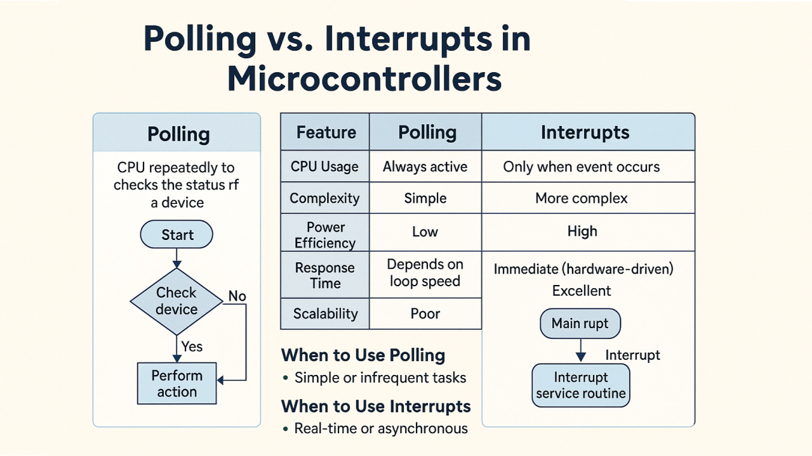
Exercise 1
Getting Started
Before using any buttons, we get familiar with the Arduino essentials: the setup() and loop() functions, setting pin modes, driving outputs with digitalWrite(), and printing to the Serial Monitor. This program blinks two LEDs alternately and prints what it is doing.
Key ideas
setup()runs once when the board powers on or resets. It is where you initialise things — open the serial port and set pin modes.loop()runs straight aftersetup()and then repeats forever. This is where the ongoing work happens.pinMode(pin, OUTPUT)tells the Arduino a pin will drive something such as an LED; useINPUT(orINPUT_PULLUP) to read a pin.digitalWrite(pin, HIGH/LOW)sets an output pin to 5V (HIGH) or 0V (LOW) — this is what turns an LED on or off.Serial.begin(9600)opens the Serial Monitor at 9600 baud, andSerial.println(...)prints a line you can read on your PC (open Tools > Serial Monitor and set it to 9600 baud).
Circuit and Setup
Wiring diagram — build this circuit on the breadboard.
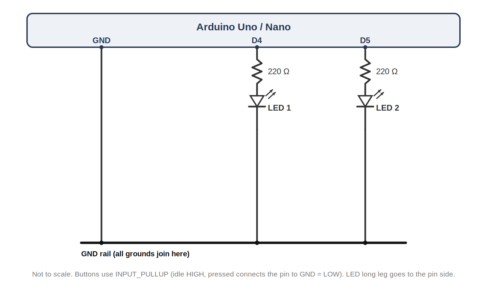
Visuino Setup
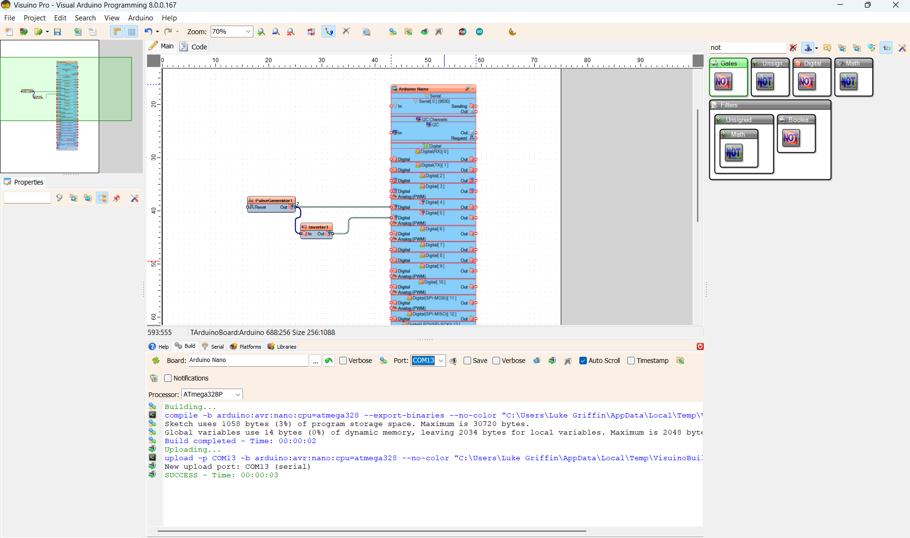
Wokwi Setup
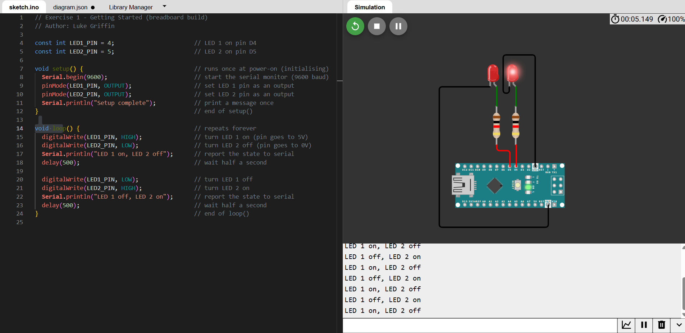
Physical setup — breadboard wiring.
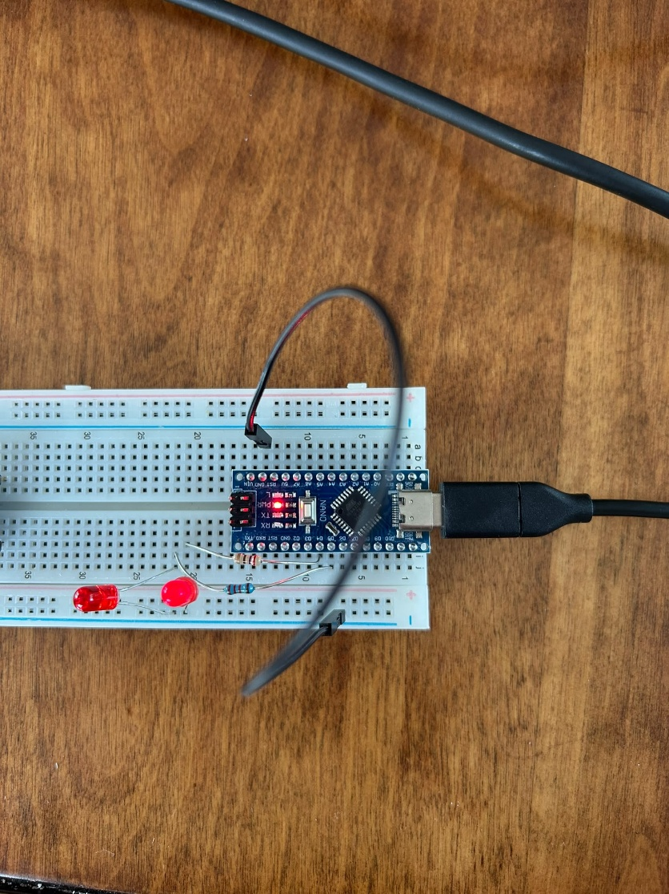
Code
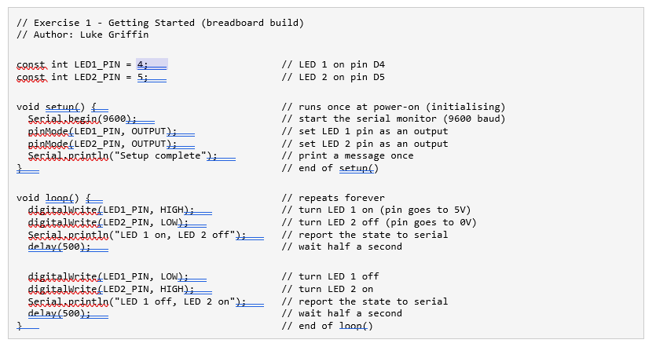
How it works
setup()opens the serial monitor and sets both LED pins as outputs — this is the initialising step.loop()turns LED 1 on and LED 2 off, prints the state, waits half a second, then swaps them, so the two LEDs alternate forever.- Open the Serial Monitor at 9600 baud to watch the messages printed each time the state changes.
Wokwi: you can also build this in the simulator at wokwi.com. Start a new Arduino Uno project, drag in a breadboard and draw the circuit shown in the wiring diagram (a breadboard and 2 LEDs with resistors on D4 and D5), paste the sketch above, and press Play.
Exercise 2
Button Debounce
This exercise introduces debounce: making a single button press register only once. It uses one push button (S1) and one LED. Each clean press toggles the LED on or off.
Button wiring (active-low)
Like every button in this lab, S1 uses INPUT_PULLUP. The internal pull-up resistor holds the pin HIGH when the button is idle, and pressing the button connects the pin to GND, pulling it LOW. This is called active-low: pressed reads LOW. No external resistor is needed on the button.
What is debounce?
A mechanical push button does not switch cleanly. For a few milliseconds after it is pressed or released the metal contacts bounce, making the pin flip between HIGH and LOW several times. Without handling this, one physical press can be read as many presses. Debounce fixes it: we only accept a new button state once the reading has stayed the same for a short settling time (here 50 ms).
Circuit and Setup
One push button (S1 on D2) and one LED (LED 1 on D4). Wiring diagram — build this circuit on the breadboard.
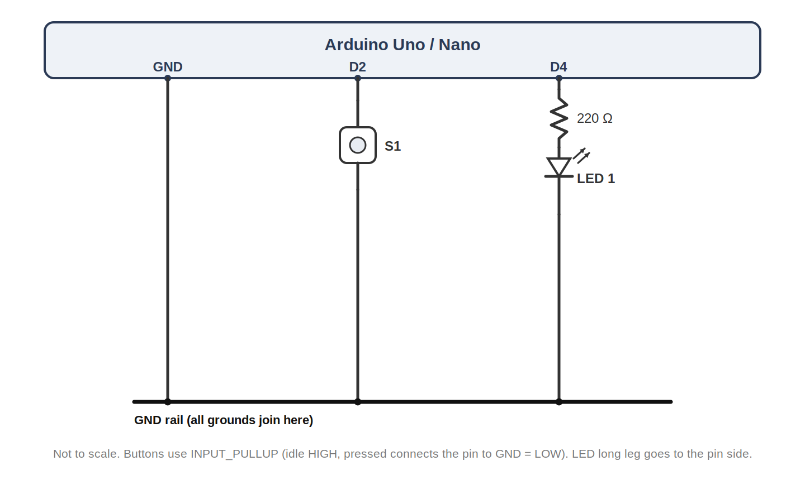
Code
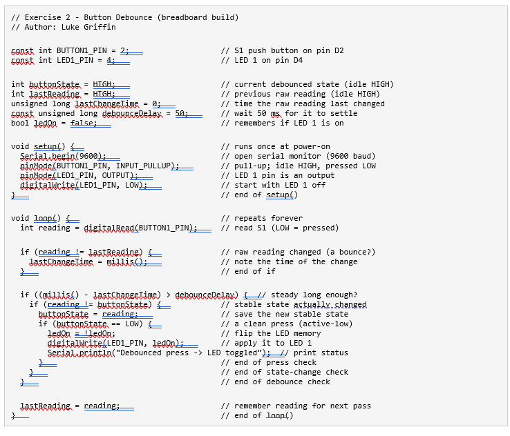
How it works
- Each pass the raw button reading is taken. Whenever it changes, a timer (
lastChangeTime) is reset. - Only when the reading has been steady for longer than
debounceDelay(50 ms) is it accepted as the real state. - On a clean change to LOW (a genuine press, active-low) LED 1 is toggled once and a message is printed.
- Try setting
debounceDelayto 0 — you will often see the LED toggle several times for a single press, which is the bounce that debounce removes.
Wokwi: Start a new Arduino Uno project, drag in a breadboard and draw the circuit shown in the wiring diagram (S1 on D2 to GND, and LED 1 with a 220 ohm resistor on D4), paste the sketch above, and press Play.
Exercise 3
Polling
Use polling to detect when the button is pressed, then turn both LEDs on for a short duration. The Arduino continuously loops, checking the state of the button. No interrupts are used.
Circuit and Setup
Wiring diagram — build this circuit on the breadboard.
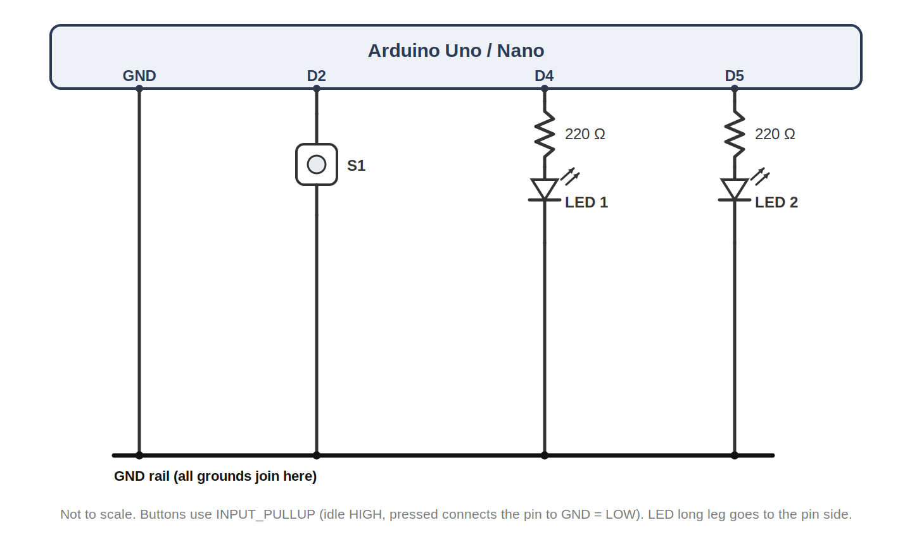
Code
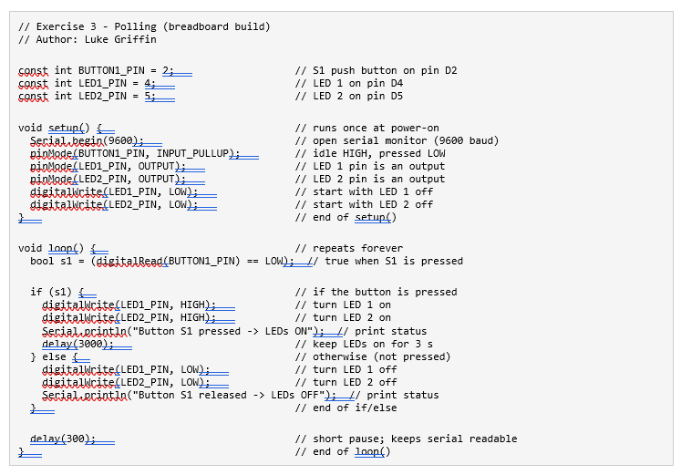
Expected Output
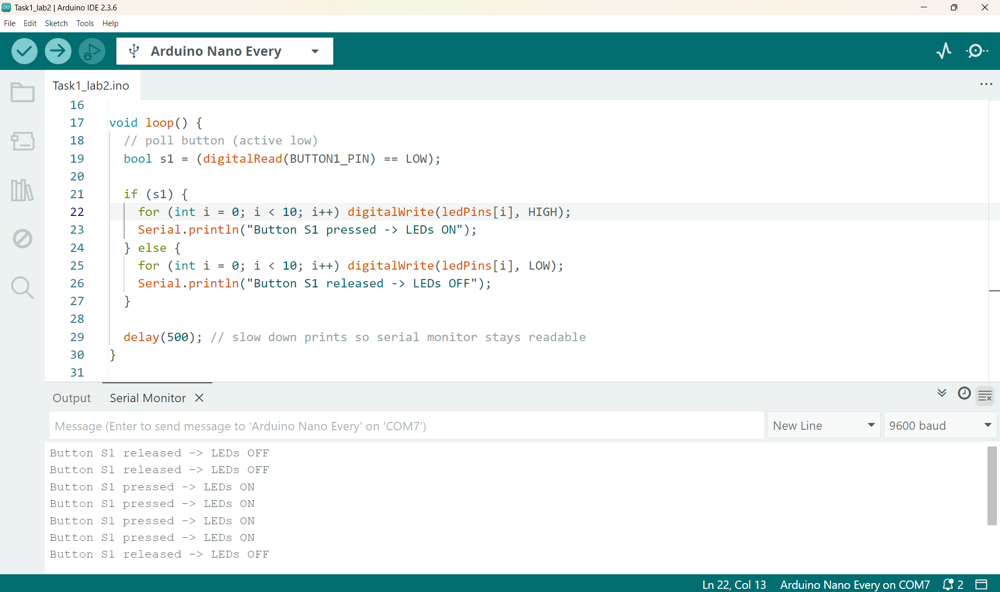
How it works
loop()reads the button each pass. If it is pressed, both LEDs are set HIGH and held for 3 seconds; otherwise they are set LOW.- The
delay(300)at the end slows the loop so the serial monitor stays readable. - This is polling in action — the program flow is dominated by actively watching the input.
Exercise 4
Interrupts
Re-implement the same behaviour using an external interrupt. The Arduino no longer checks the button in the main loop. Instead, pressing the button triggers an ISR that sets a flag, and the main loop responds to that flag.
Circuit and Setup
Same wiring as Exercise 3 — one push button (S1) and two LEDs.
Code
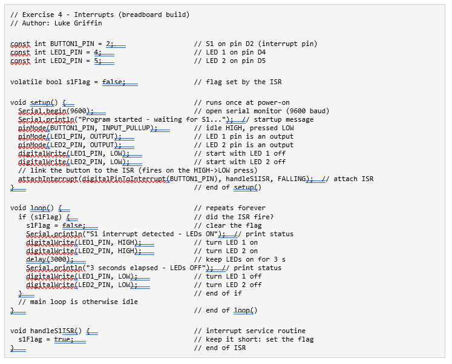
Expected Output
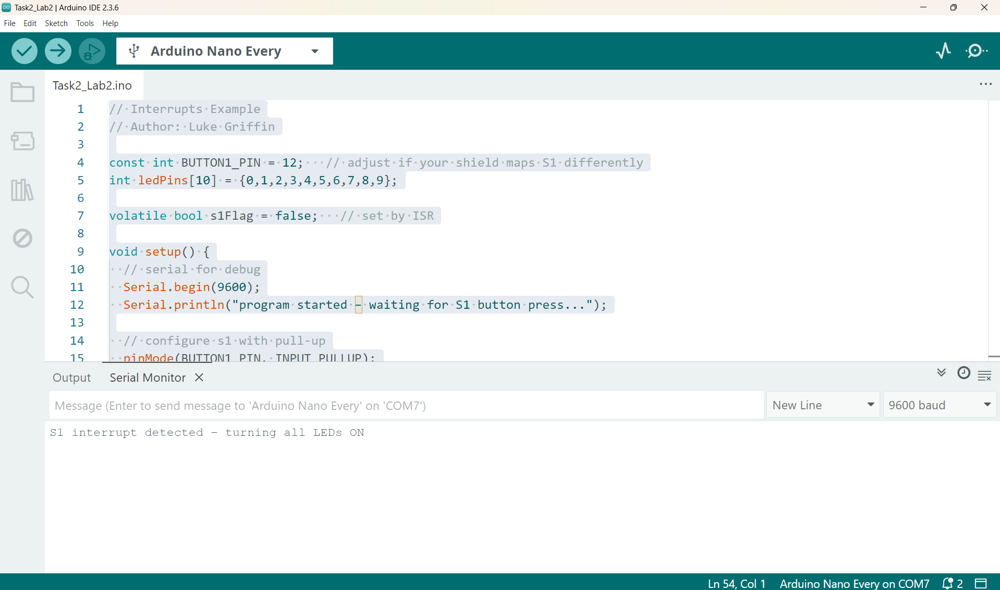
How it works
volatile bool s1Flagsignals from the ISR to the main loop;volatileensures it is always read correctly.attachInterrupt(... FALLING)runs the ISR on the falling edge (HIGH to LOW = a press).handleS1ISR()is kept short: it only sets the flag, with no prints or delays.
Exercise 5
Two Buttons
Add a second push button (S2 on D3), one button per LED. Below is a polling version for two buttons: S1 lights LED 1 and S2 lights LED 2.
Circuit and Setup
Same as before plus a second push button (S2 on D3). Wiring diagram — build this circuit on the breadboard.
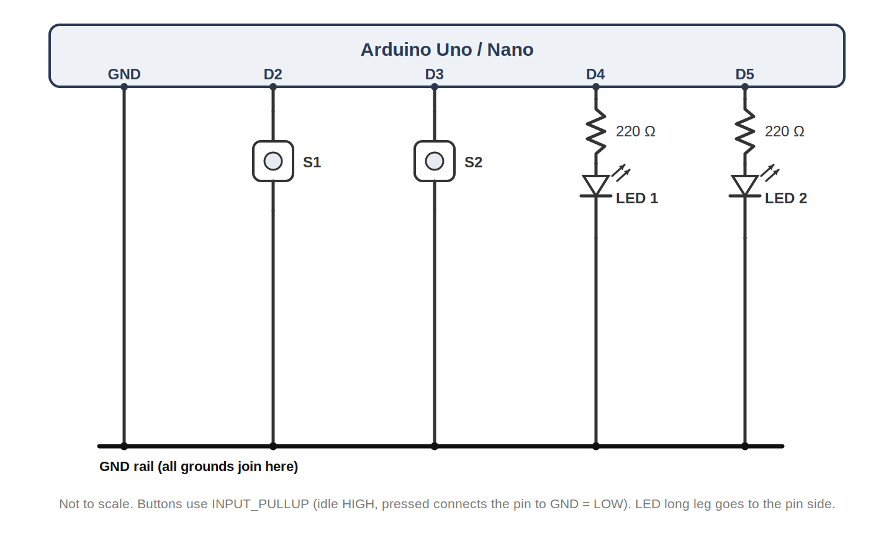
Polling Code (provided)
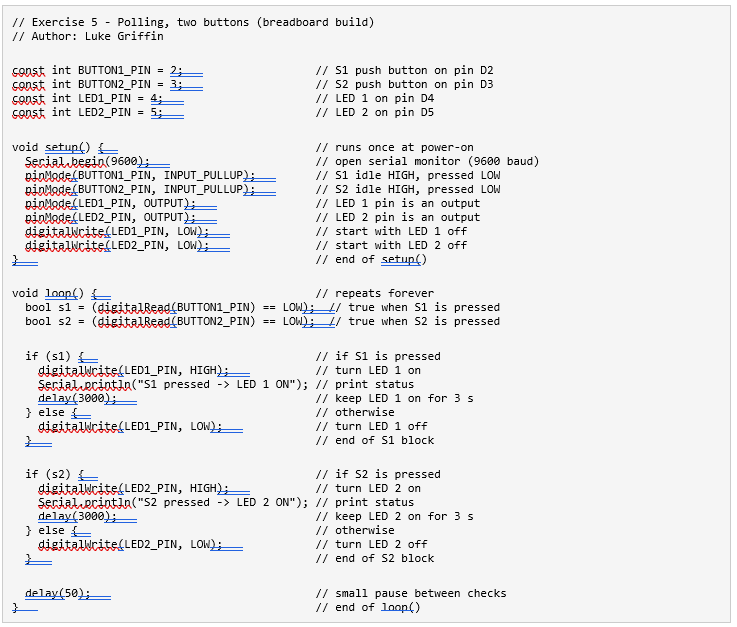
Your Task
Using the polling code above and the interrupt code from Exercise 4, write an interrupt-driven version so that pressing Button 1 turns on LED 1 and pressing Button 2 turns on LED 2. Because S1 and S2 are on D2 and D3 (both interrupt pins), the same circuit works for both the polling and interrupt versions — only the code changes.
Conclusion
In this lab we started from the Arduino basics and then compared polling and interrupts, using a simple buttons-and-LEDs breadboard circuit.
Summary of key learnings:
- The Arduino runs
setup()once for initialising, thenloop()forever;pinMode,digitalWriteand the Serial Monitor are the basic tools. - Buttons use
INPUT_PULLUPand are active-low: the pin idles HIGH and reads LOW when pressed, so no external resistor is needed. - Debounce: mechanical buttons bounce, so a short settling delay (about 50 ms) makes each press register only once.
- Polling repeatedly asks the hardware "Are you pressed?" — simple, but can be inefficient.
- Interrupts let the hardware tell the software "Button pressed now!", so the CPU does not check unnecessarily.
- Interrupt-driven systems let the CPU do other work or sleep, which is ideal for power saving.
- Interrupt code needs care: use
volatile, keep the ISR short, and remember the main code and ISR run asynchronously.